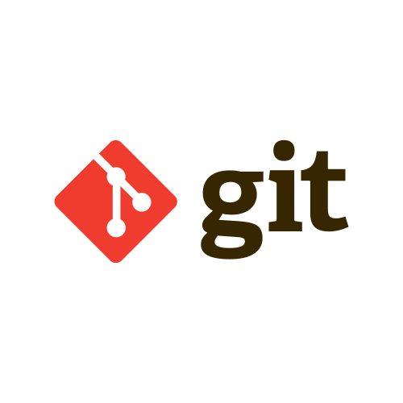

Web Developer
Hello, I'm Mark Jason T. Galang, a web developer who enjoys building functional, user-focused projects using a straightforward tech stack—HTML, CSS, JavaScript, PHP, MySQL, AJAX, and others. With a passion for clean, efficient code, I bring ideas to life through independent projects that prioritize usability and creativity. Here, you’ll see my journey in web development, from dynamic applications to innovative, community-driven platforms like Book n' Map. Thank you for visiting, and I look forward to sharing my work with you!
Work Experience
Beehive Technologies Inc.
Junior Software Engineer (April 2024 - September 2024)
- Updated and improved the frontend of a document management system using HTML, CSS, and JavaScript
- Enhanced and maintained a custom form builder tool with HTML, CSS, and JavaScript for user interface improvements
- Integrated Dropbox services (DBX Platform) into the form builder using AJAX for enhanced file handling capabilities
- Collaborated with cross-functional teams following Agile methodology to ensure timely delivery of project milestones
- Utilized Git and GitHub for version control and efficient project management in a collaborative environment
Education
FEU Institute of Technology (Cum Laude), 2019 - 2024
Bachelor of Science in Computer Science with Specialization in Software Engineering
P. Paredes St, Sampaloc, Manila, 1015 Metro ManilaSTI College Ortigas-Cainta (with High Honors), 2017 - 2019
Senior High School - IT in Mobile App and Web Development
Ortigas Ave Ext, Cainta, 1900 RizalTech Stack


- 

Projects

Book n' Map
HTML, CSS, JavaScript, PHP, MySQL, AJAX, Mapbox & OpenStreetMap (OSM), Composer, PHPMailer
Book n' Map is a community-driven platform designed to help users discover and share quiet spaces (e.g., libraries). Whether you're a student looking for a peaceful environment or a book lover in search of new reading spots, Book n' Map helps you find the best places.
CosplayHi
HTML, CSS, JavaScript, PHP, MySQL, AJAX, Composer, PHPMailer
CosplayHi is a platform designed to help cosplayers find mutuals and create public cosplay profiles to be easily searched by others. Whether you're a seasoned cosplayer or new to the community, CosplayHi makes it easy to connect with others and share your cosplay journey.

StudentGig
HTML, CSS, JavaScript, PHP, MySQL, AJAX, PayPal JavaScript SDK, Composer, PHPMailer, AJAX Polling
StudentGig is a platform designed to connect college students with short-term, flexible gig opportunities. It streamlines the process for students to find part-time work, internships, and freelance gigs, while offering companies and individuals a straightforward way to post job listings suited for student talent. With diverse job options, including remote, onsite, and hybrid roles, StudentGig aims to make earning and learning more accessible for students, empowering them to gain valuable experience alongside their studies.
Awards
- Champion
- FEU Tech Clash of Coders: JTCP 2022
- FEU Tech PyTournament: An Inter-Collegiate Algorithmic Challenge 2022
- FEU Tech Clash of Coders 2021
- 1st Runner-Up
- FEU Tech ACM: Iteration Clash Of Coders 2023
- FEU Alabang CODEvention: Programming 101 Competition 2021
- FEU Tech Think Like a Coder 2020
- 3rd Runner-Up
- UP Baguio Iskode 2022
- 8th Place (team)
- UP Diliman Algolympics 2022
Certifications
MTA: Introduction to Programming Using Java - Certified 2021
IT Specialist - Python
Earners of the MTA: Introduction to Programming Using Java certification demonstrate the skills and knowledge to write, debug and maintain well-formed, well documented Java code. The MTA program provides an appropriate entry point to a future career in technology.
Visit Credly LinkEarners of this badge demonstrate that they can recognize, write, and debug Python code that will logically solve a problem.
Visit Credly Link